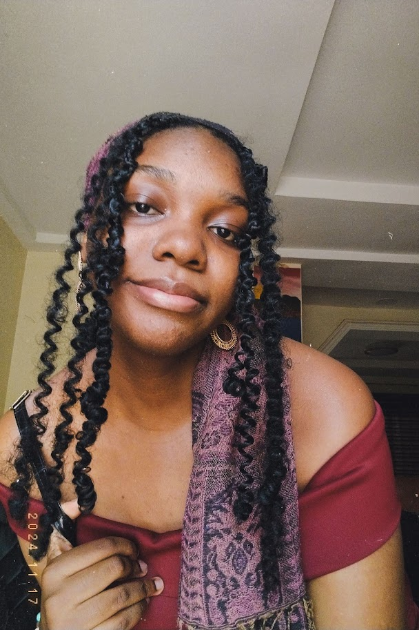

About Me

Hi, I'm Roseline "The Sketchy Kori" Azubuike, an character and story artist with a passion for visual storytelling (obviously). I hold a degree in Law, but ultimately chose to pursue a career in digital art. The transition strengthened my analytical thinking and reinforced my commitment to a creative career. As such, my artistic journey has been shaped by self directed learning, alongside professional training and production experience.
I love creating expressive characters, thoughtful designs and stories that leave a lasting impression. Whether through animation, storyboarding or illustration, my goal is always to create work that feels honest, engaging and full of life.
I currently work as a multi-disciplinary artist while continuing to develop my skills across character design and visual development, with a growing interest in game art. I'm always excited by opportunities to learn, collaborate and tell meaningful stories.... What part do I get to talk about liking cornflakes as one of my personality traits? I like cornflakes. A lot.
Specialties
- Animation
- Storyboarding
- Character Design
- Illustration
Software
- Toon Boom Harmony
- Storyboard Pro
- Adobe Photoshop
- Adobe Illustrator
- Krita
- Clip Studio Paint
Curriculum Vitae
For a detailed overview of my education, experience and skills, you can download my CV below.
► Download CV